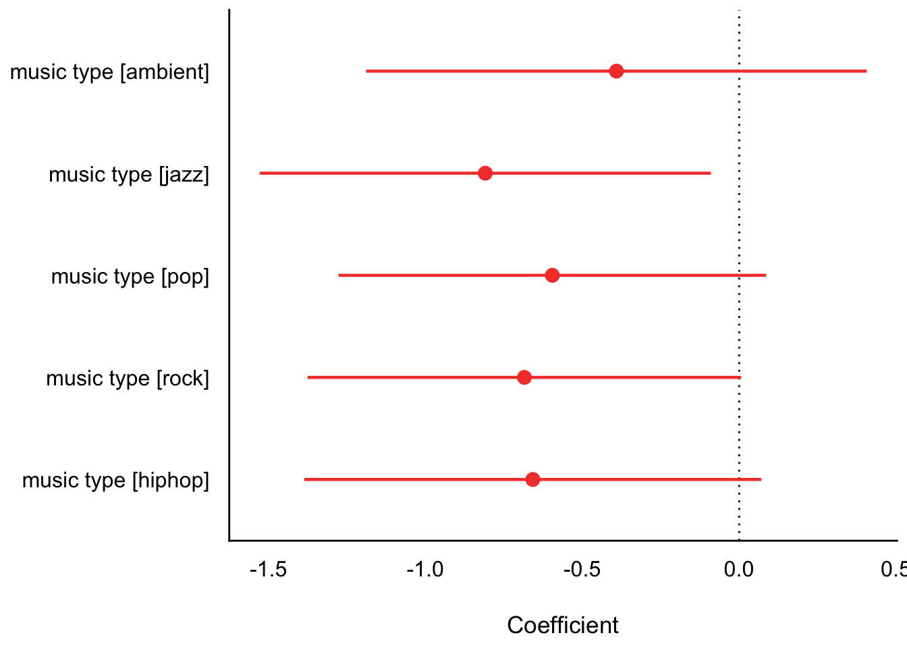
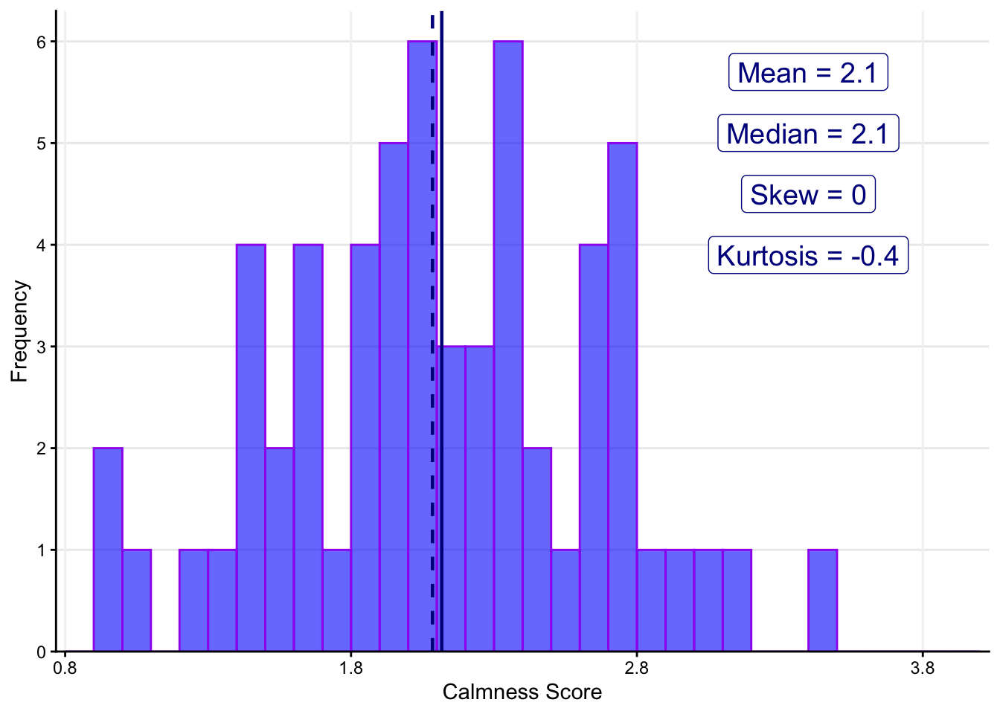
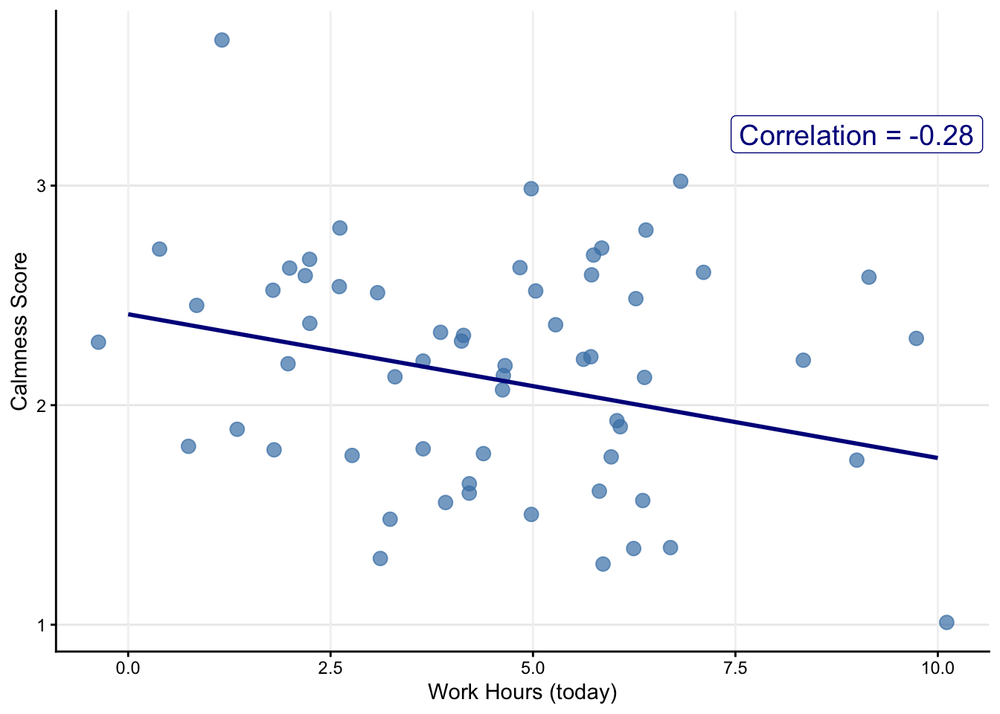
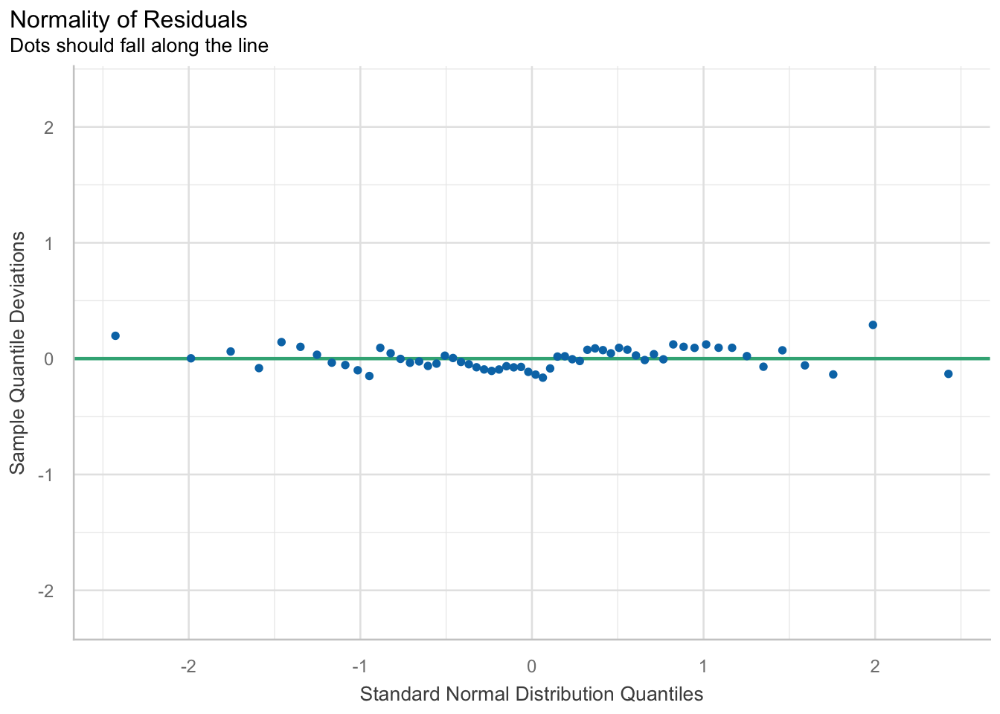
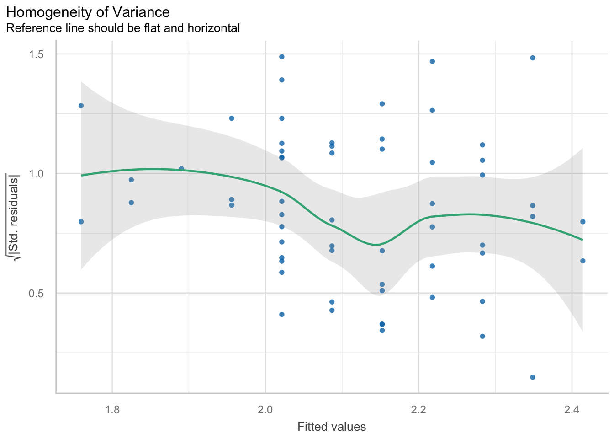
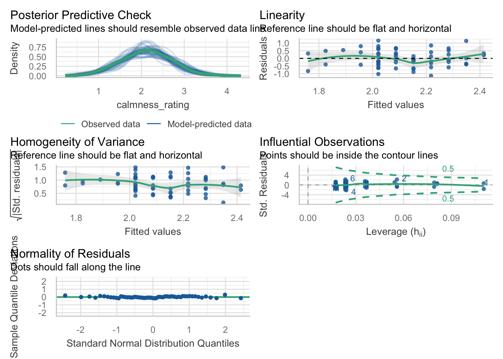

knitr::opts_chunk$set(warning = FALSE, message = FALSE, eval=TRUE)
options(scipen = 999) Week 8 Lab (PSY 150) - Uncertainty 🎲
Standard Errors, Confidence Intervals, & Regression Assumptions
Load packages
library(tidyverse)
library(here)
library(janitor)
library(sjPlot)
library(parameters)
library(performance) # <<< Test regression assumptions
source("load_reg_functions.R")
source("load_plot_functions.R")Example data: music_stress_daily_sim_N60.csv
dat <- read_csv(here("data", "music_stress_daily_sim_N60.csv")) %>%
mutate(
music_type = factor(music_type,
levels = c("classical","ambient","jazz","pop","rock","hiphop")),
with_others = factor(with_others, levels = c(0,1), labels = c("alone","with_others")),
weekend = factor(weekend, levels = c(0,1), labels = c("weekday","weekend")))Simulated lab data - Music Listening Example:
Disclaimer: The data used in this lab has been simulated to parallel the analyses & results for the study titled, “Music Listening and Stress in Daily Life — A Matter of Timing” by Linnemann et al. (2018):
Article - Linnemann et al. (2018)
Although the data is simulated to be realistic, results should not be interpreted literally as simulated data necessarily includes assumptions that omit complexity found in real data that is reported by a sample of participants.
SE rule:
- If the predictor estimate is at least twice the size of SE →
Significant (p < .05) - If the predictor estimate is less than twice the size of SE →
Not Significant (p > .05)
CI rule:
- If the 95% confidence interval excludes zero than the estimate is →
Significant (p < .05) - If the 95% confidence interval includes zero than the estimate is →
Not Significant (p < .05)
Is the multiple regression model significant?
Model 1: Two continuous predictors
model1 <- lm(calmness_rating ~ duration_min + workload_today,
data = dat)
tab_model(model1,
digits = 3,
show.se = TRUE,
show.ci = FALSE,
show.p = FALSE,
show.r2 = FALSE)| calmness rating | ||
| Predictors | Estimates | std. Error |
| (Intercept) | 2.394 | 0.156 |
| duration min | 0.002 | 0.002 |
| workload today | -0.067 | 0.030 |
| Observations | 60 | |
Use the SE rule to determine significant?
Model 2: One categorical predictor
Levels: 0 = alone, 1 = with_others
model2 <- lm(calmness_rating ~ with_others,
data = dat)
reg_table(model = model2, type = 2)| calmness rating | ||
| Predictors | Estimates | CI |
| (Intercept) | 2.043 | 1.887 – 2.200 |
| with others [with_others] | 0.341 | 0.005 – 0.678 |
| Observations | 60 | |
Use the CI rule to determine significant?
Model 3: One categorical predictor (music_typeis a factor with 6 levels)
Levels: 0 = classical, 1 = ambient, 2 = jazz, 3 = pop, 4 = rock, 5 = hiphop
model3 <- lm(calmness_rating ~ music_type,
data = dat)
tab_model(model3,
digits = 3,
show.se = TRUE,
show.p = TRUE,
show.r2 = FALSE)| calmness rating | ||||
| Predictors | Estimates | std. Error | CI | p |
| (Intercept) | 2.733 | 0.315 | 2.103 – 3.364 | <0.001 |
| music type [ambient] | -0.391 | 0.398 | -1.189 – 0.407 | 0.330 |
| music type [jazz] | -0.809 | 0.359 | -1.529 – -0.090 | 0.028 |
| music type [pop] | -0.596 | 0.340 | -1.277 – 0.086 | 0.085 |
| music type [rock] | -0.685 | 0.345 | -1.376 – 0.006 | 0.052 |
| music type [hiphop] | -0.658 | 0.363 | -1.386 – 0.071 | 0.076 |
| Observations | 60 | |||
Visualize predictor estimates (β) and 95% CI intervals
plot(parameters(model3), show_intercept = FALSE) 
Test regression assumptions using the {performance} package
- Assumption 1: Normality
- Assumption 2: Homogeneity Assumption (constant variance across X)
- Assumption 3: Linearity Assumption
Check the outcome variable distribution (Y)
hist_plot(
data = dat,
binwidth=.1,
x_var = calmness_rating,
x_label = "Calmness Score",
fill = "blue", color = "purple",
break_min=.8, break_max=4, break_by = 1,
mean_line = TRUE, median_line = TRUE,
skew_value = TRUE, kurtosis_value = TRUE,
)
Plot the bivariate associations of the predictor (X) by the outcome (Y)
scatter_plot(
data = dat,
x_var = workload_today,
x_label = "Work Hours (today)",
y_var = calmness_rating,
y_label = "Calmness Score",
point_color = "steelblue",
corr_line = TRUE,
)
model4 <- lm(calmness_rating ~ workload_today,
data = dat)Assumption 1: Test Normality Assumption using a qq-plot
plot(check_normality(model4))
Assumption 2: Test Homogeneity Assumption (constant variance across X)
plot(check_heteroskedasticity(model4))
Assumption 3: Test Linearity Assumption
plot(check_model(model4))